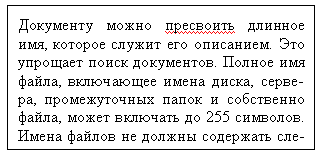

Программы пакета Microsoft Office помечают неправильно написанные слова, возможные грамматические и стилистические ошибки в ходе работы над документами, так что их можно легко увидеть в ходе работы, как показано в примере выше. Можно щелкнуть правой кнопкой неправильно написанные слова, чтобы увидеть варианты исправления.
Чтобы исправить ошибку в примере вручную, нужно:
Примечание 1. Если в документе много ошибок следует использовать инструмент Правописание (вкладка Рецензирование). С его помощью можно просматривать по-очереди все ошибки, начиная с того места, где установлен курсор, исправлять или пропускать каждую.
Примечание 2. Word также позволяет использовать функцию автозамены для автоматического исправления правописания в ходе набора текста без подтверждения каждого исправления. Например, если было набрано опредиленно, после нажатия пробела или другого знака препинания функция автозамены автоматически заменит слово с ошибкой на определенно.
Назад | Содержание | Вперед